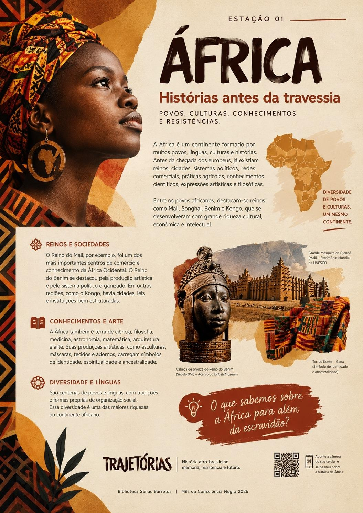
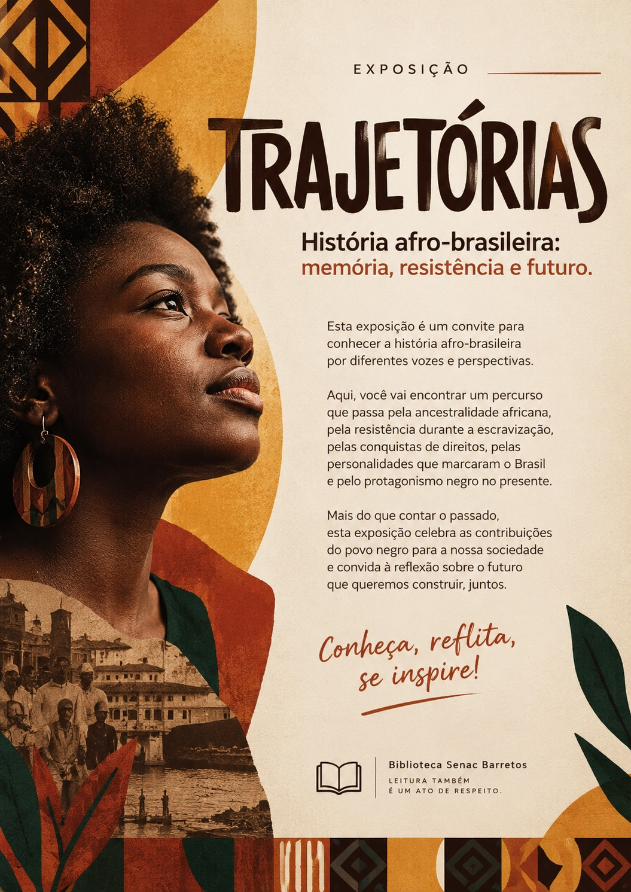
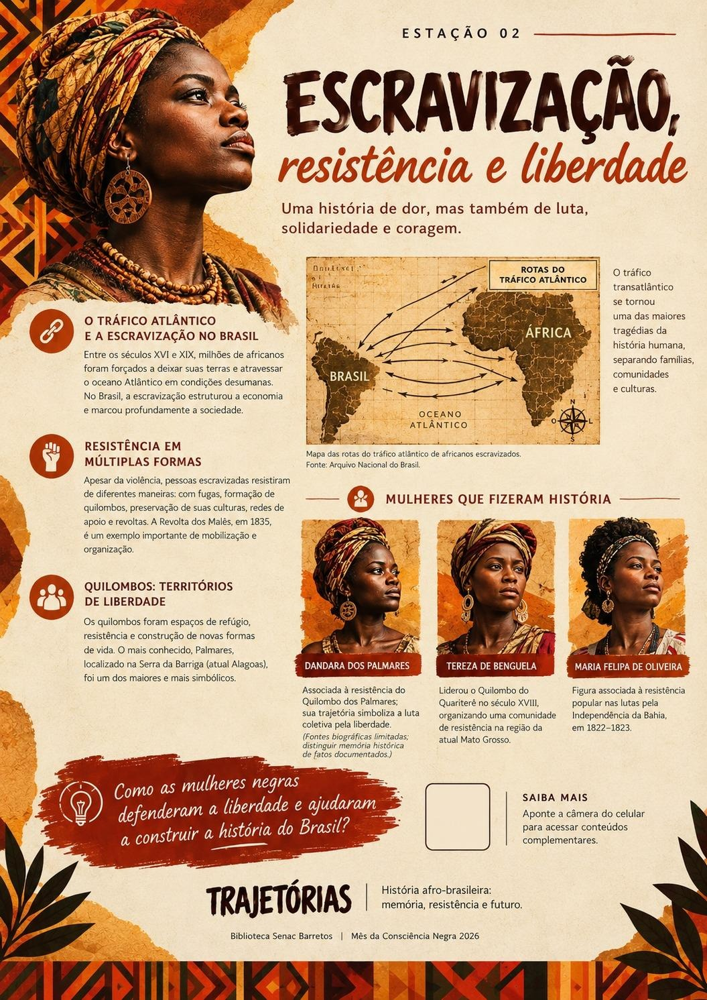
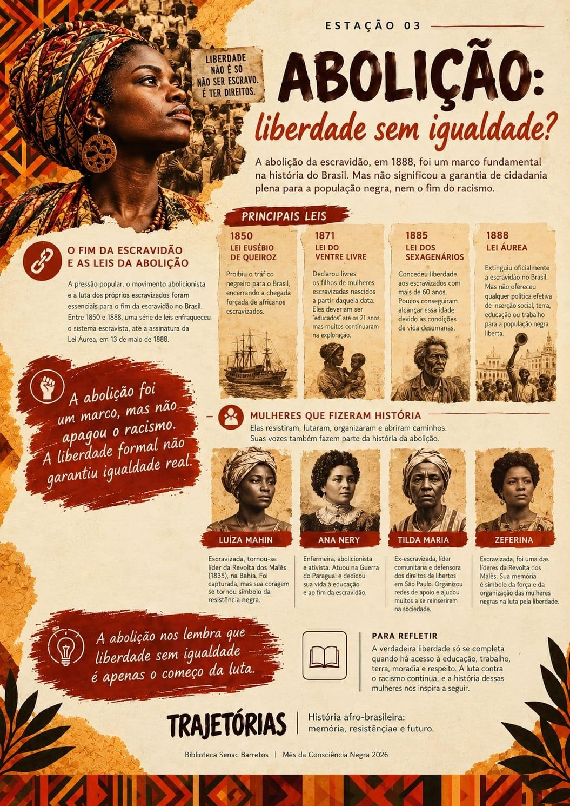
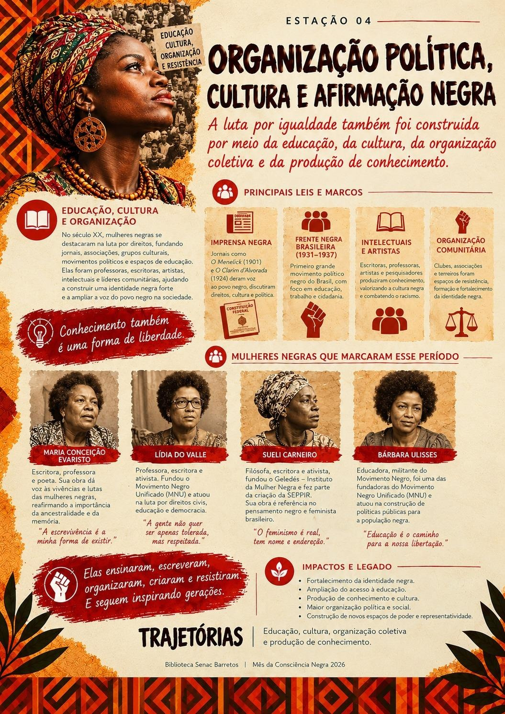
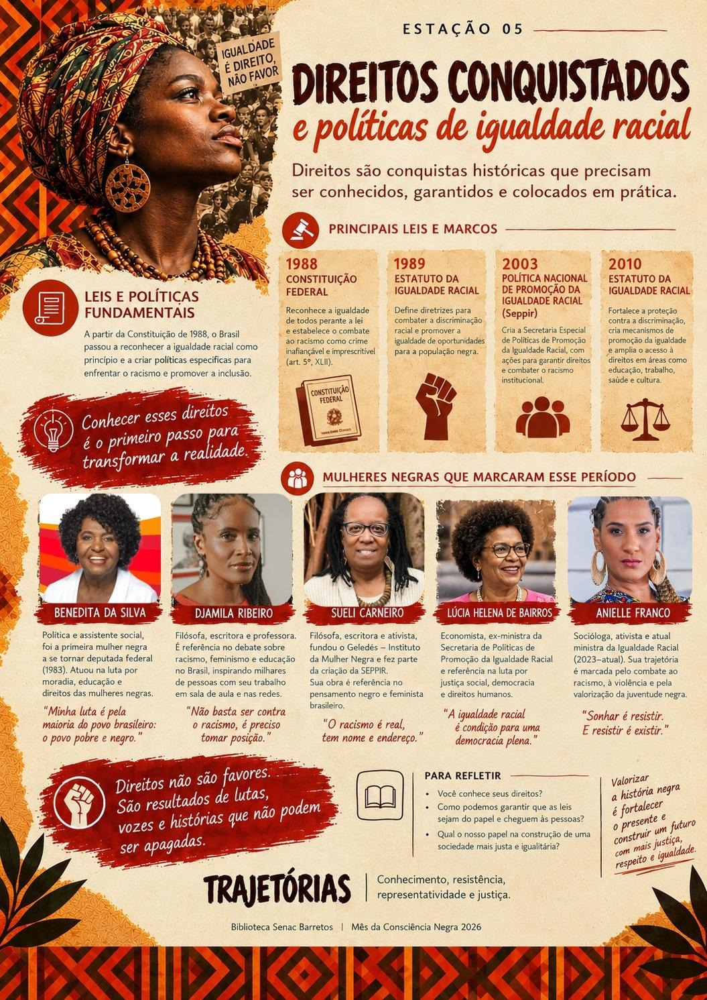
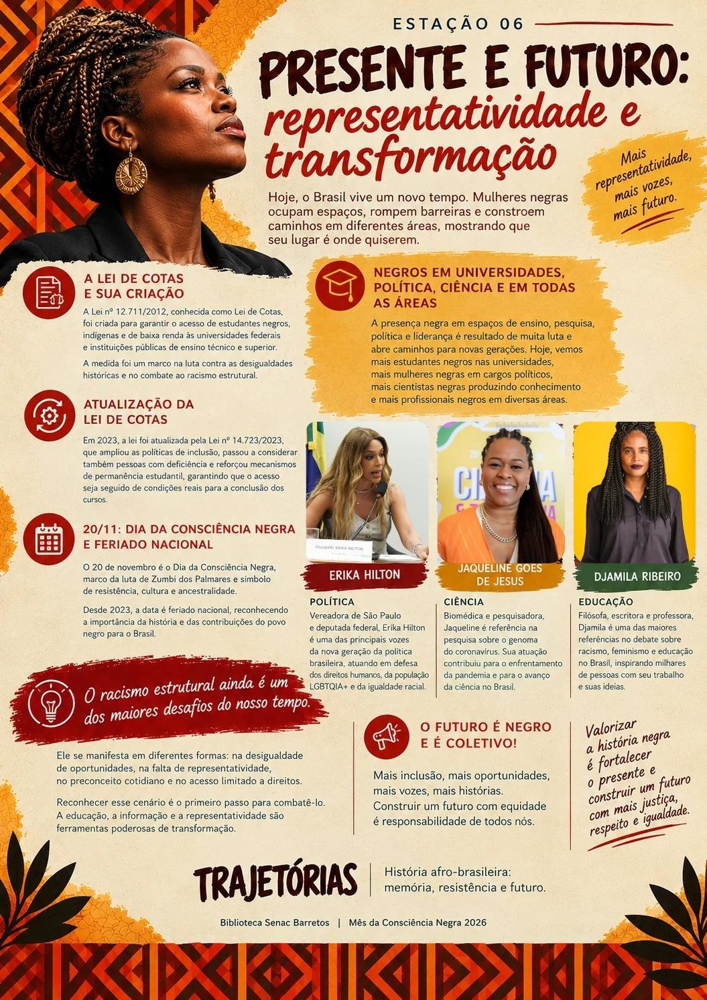

Estação 01
África: Histórias antes da travessia
Povos, culturas, conhecimentos, reinos organizados e resistências antes da chegada dos europeus.
Tradução em Libras

Exposição em Libras
História afro-brasileira: memória, resistência e futuro.
Esta exposição é um convite para conhecer a história afro-brasileira por diferentes vozes e perspectivas.
Aqui, você vai encontrar um percurso que passa pela ancestralidade africana, pela resistência durante a escravização, pelas conquistas de direitos, pelas personalidades que marcaram o Brasil e pelo protagonismo negro no presente.

Povos, culturas, conhecimentos, reinos organizados e resistências antes da chegada dos europeus.

O tráfico atlântico, os quilombos como territórios de liberdade e as mulheres negras que lideraram lutas históricas.

As leis abolicionistas, o pós-1888 sem políticas de inserção e a resistência de Luíza Mahin, Ana Nery, Tilda Maria e Zeferina.

A Imprensa Negra, a Frente Negra Brasileira, o MNU e o legado intelectual de Conceição Evaristo, Lídia do Valle, Sueli Carneiro e Bárbara Ulisses.

Da Constituição de 1988 ao Estatuto da Igualdade Racial e as mulheres negras que transformaram essas leis em realidade.

A Lei de Cotas, o feriado nacional de 20 de Novembro e o protagonismo negro na política, na ciência e na educação.